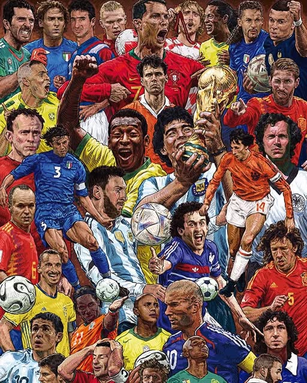
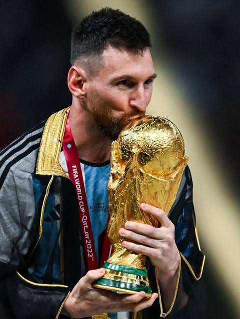
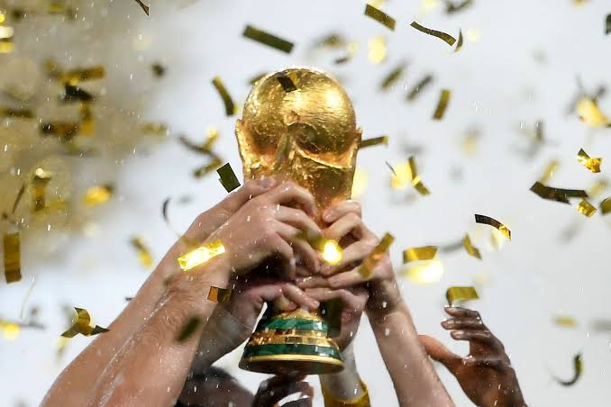

Leyendas del Fútbol Mundial
A lo largo de la historia de la Copa Mundial de la FIFA han surgido jugadores que marcaron una época gracias a su talento, liderazgo y grandes actuaciones. Sus habilidades dentro del campo, junto con su esfuerzo y dedicación, los convirtieron en referentes del fútbol mundial. Muchos de ellos lograron conquistar títulos, romper récords y dejar momentos inolvidables que siguen siendo recordados por millones de aficionados.

Jugadores que hicieron historia
- Pelé (Brasil): Único futbolista en conquistar tres Copas del Mundo (1958, 1962 y 1970), considerado una de las máximas figuras del fútbol.
- Diego Maradona (Argentina): Campeón del Mundial de México 1986 y autor del famoso "Gol del Siglo", una de las jugadas más recordadas de todos los tiempos.
- Lionel Messi (Argentina): Campeón del Mundial Catar 2022, máximo referente de su generación y ganador de múltiples premios individuales.
- Miroslav Klose (Alemania): Máximo goleador en la historia de la Copa Mundial con 16 goles y campeón del Mundial Brasil 2014.

El legado de las leyendas
Estas figuras no solo destacaron por los títulos obtenidos, sino también por los valores que representaron dentro y fuera del campo. Su disciplina, liderazgo y compromiso inspiraron a nuevas generaciones de futbolistas, demostrando que el éxito se alcanza con esfuerzo, constancia y pasión por el deporte. Gracias a su legado, el Mundial continúa siendo el torneo más importante y esperado del fútbol internacional.
